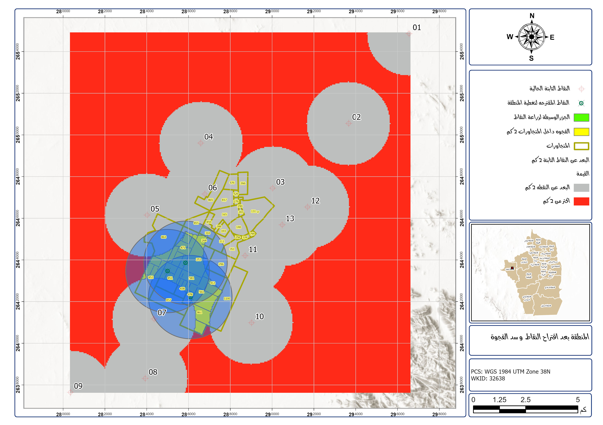
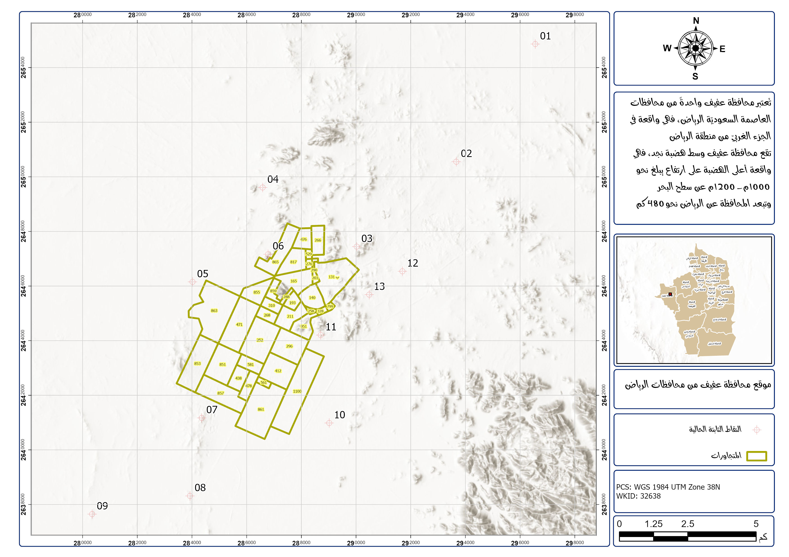
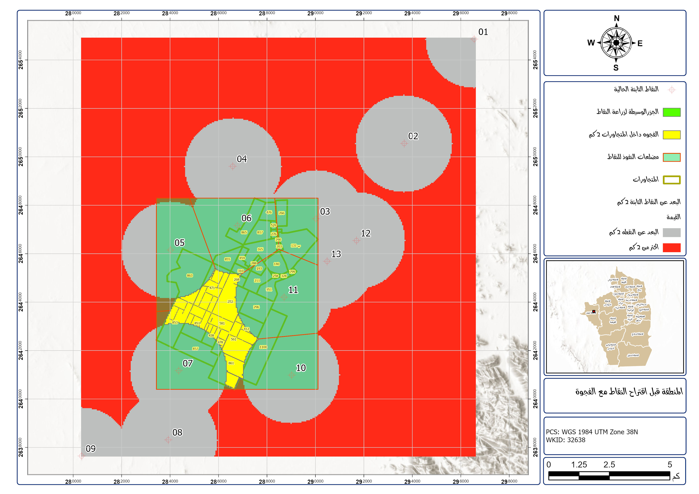
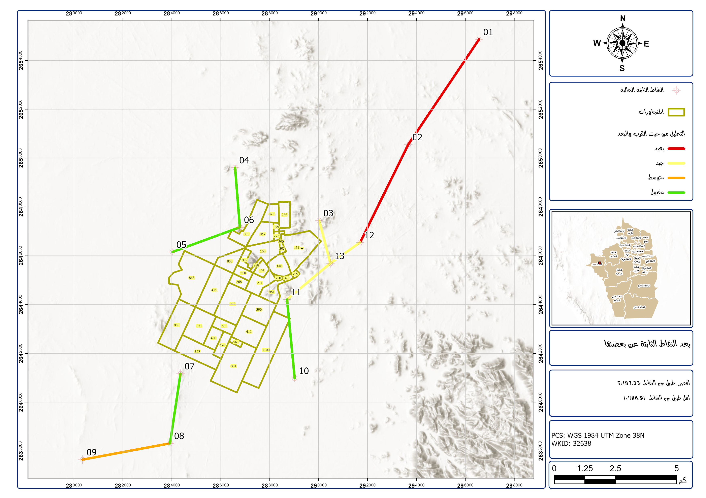
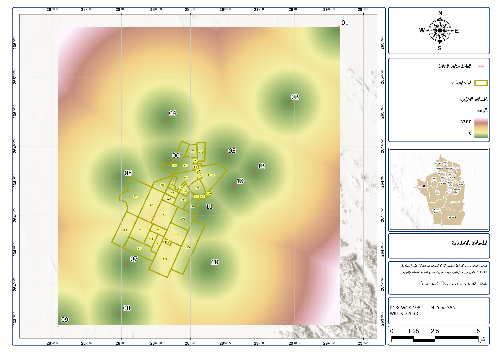
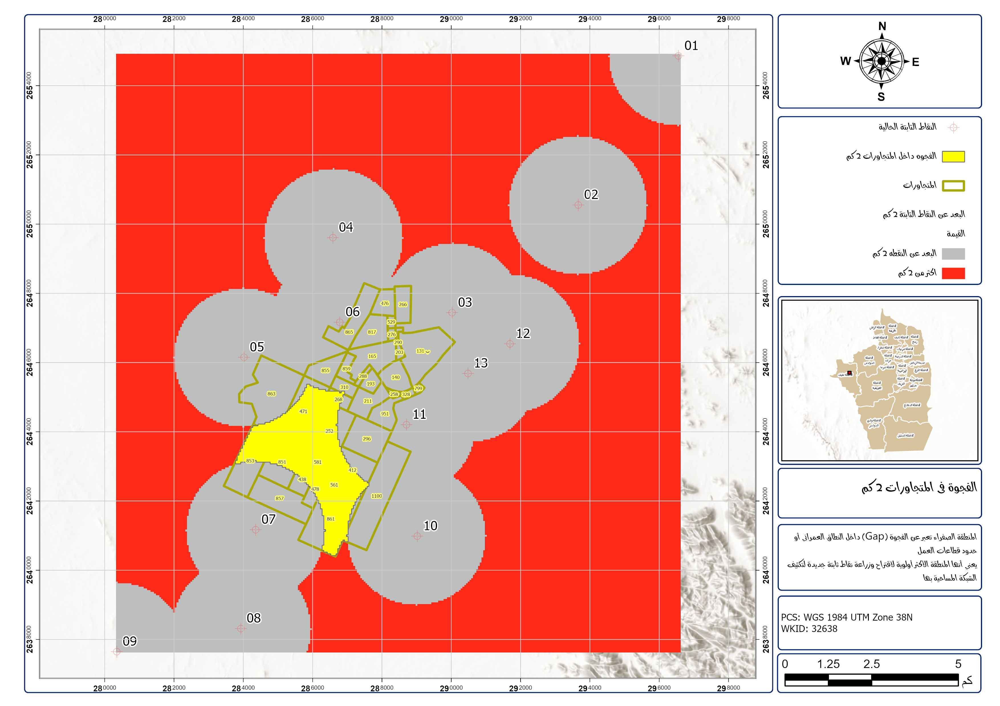

Geodetic Control Network Densification in Afif
A strategic GIS-based optimization project focused on strengthening the geodetic control network with the fewest possible points while maximizing coverage and reliability.

Project objective
The study examined how a geodetic control network could be improved by measuring nearest-neighbor relationships, testing Euclidean distance scenarios, and identifying spatial coverage gaps that limited the network’s efficiency.
Methodology
- Mapped the existing control points and benchmark layout
- Evaluated nearest-neighbor service coverage
- Tested 2 km Euclidean distance scenarios
- Identified uncovered network gaps and weaknesses
- Recommended only three strategic densification points
Key outcome
Instead of expanding the network broadly, the solution focused on efficient densification that improved real coverage while minimizing unnecessary field effort and cost.
Spatial workflow and results





